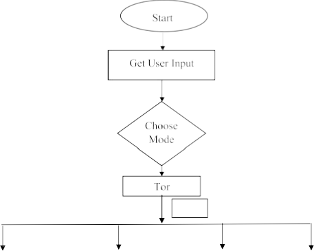
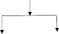
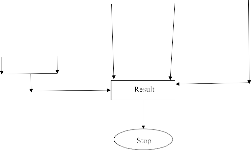

MICRO PROJECT REPORT
submitted by
to
the APJ Abdul Kalam Technological University
in partial fulfilment of the requirements for the award of the Degree of Bachelor of Technology in Computer Science and Engineering
(Cyber Security)
College Of Engineering Kallooppara Pathanamthitta
October 2025
We hereby declare that the microproject report ONLINE FOOD ORDERING FOR COLLEGE CANTEEN submitted for the partial fulfilment of the requirements of the Third Semester Microproject for the subject PBCCT304 – Basic Concepts in Computer Networks, prescribed by APJ Abdul Kalam Technological University, Kerala is a bonafide work done by us under the guidance of GUIDE’S NAME
The submission represents our ideas in our own words and where the ideas or words of others have not been included. We have adequately and accurately cited and referred to the original sources. We also declare that we have adhered to ethics and integrity and have not misinterpreted or fabricated any data or ideas or facts or sources in our submission. We understand that any violation of the above will be a case for disciplinary action by the institution and/or the University and can also evoke penal actions from the sources which have thus not been properly cited or from whom proper permission has not been obtained. This report has not been previously formed on the basis of the award of any degree, diploma or similar title of any other University.
Place: Pathanamthitta Group members name
Date: 05-11-2024
This is to certify that the microproject work report entitled ‘ONLINE FOOD ORDERING FOR COLLEGE CANTEEN’ submitted by AMARNAAD S V (pta24CC016), AMRITAMANOJ (pta24CC020), DHANUSH UDAYAN (pta24CC033), KALIDAS A R(pta24CC041), SOUMYA SARA JOHN (pta24CC056), and VIVEK
Assistant Professor, Assistant Professor,
Department of Department of
Computer Science & Computer Science &
Engineering Engineering
(Cyber Security) (Cyber Security)
We take this occasion to thank God, almighty for blessing us with his grace and taking our endeavour to a successful culmination. We extend our sincere and heartfelt thanks to the Principal Dr. Deepa J, the Head of the Department Mr. Raj Kumar T, and our project guide name of the Department of Computer Science and Engineering (Cyber Security), College of Engineering Kallooppara, for providing us with the right guidance and advice at the crucial junctures and for showing us the right way. Last but not leaving the one, we would like to thank our parents for their motivation and our friends who supported us with valuable contributions regarding our topic and encouragement throughout the course of work.
Group members name
WebGuard Insight Pro-XE is a versatile command-line tool developed using Bash script and Python, focused on comprehensive web application reconnaissance through a blend of active and passive techniques. Designed with the cybersecurity professional in mind, the tool offers a range of capabilities to identify and exploit vulnerabilities in web applications, enhancing both the breadth and depth of security assessments. One of the standout features of WebGuard Insight Pro-XE is its automated vulnerability scanning. This function enables real-time detection of security flaws within web applications, streamlining the identification process. By automating this critical task, users can quickly pinpoint weaknesses that could be exploited by malicious actors. The vulnerability scanning feature is continually being refined to improve accuracy and efficiency, ensuring that users receive the most precise and actionable data possible.
In addition to vulnerability scanning, the tool is set to introduce advanced exploit modules. These modules will empower users to perform deeper penetration testing, simulating real- world attack scenarios to uncover even the most hidden vulnerabilities. By integrating these advanced exploitation techniques, WebGuard Insight Pro-XE not only identifies security issues but also provides the tools needed to assess the potential impact of these vulnerabilities on the target application. Privacy and anonymity are also central to WebGuard Insight Pro-XE’s design. With upcoming enhancements such as Tor integration, users can conduct reconnaissance activities while maintaining their anonymity. This ensures that security professionals can operate without revealing their identity or intentions, adding an extra layer of security to their activities.
The tool is being continuously updated to support multi-target processing and optimized for reduced complexity and efficient resource utilization. These improvements make it scalable for large environments and compatible with all Unix-like operating systems, ensuring broad applicability and ease of use. WebGuard Insight Pro-XE aims to be an indispensable resource for security professionals, combining automated proactive offensive approaches with robust privacy measures. By integrating real-time vulnerability scanning, advanced exploit modules, and privacy tools, it provides a comprehensive solution for web application security.
Contents for s3 microproject Introduction
Aim and objective
Requirements and Specification(h/w and s/w requirements)
Database design(((((((add if ur project needs this otherwise eliminate this chapter) System Implementation
Code listing((((((((this chapter contains the code snippet and screenshot of GUI) Result
Conclusion and future scope References
.
CONTENTS | ||
ACKNOWLEDGEMENT | i | |
ABSTRACT | ii | |
LIST OF FIGURES | v | |
ABBREVIATIONS | vi | |
CHAPTER 1: INTRODUCTION | 1 | |
1.1 Background | 1 | |
1.2 Existing System | 2 | |
1.3 Problem Statement | 2 | |
1.4 Objectives | 3 | |
1.5 Scope | 3 |
Methodology
Assumptions
Limitations
MTAFinder 6
An Integrated Approach Towards Vulnerability Assessment & Penetration Testing
for a Web Application 6
Automation of Recon Process for Ethical Hackers 6
A Framework for Web Application Vulnerability Detection 7
Penetration Testing Active Reconnaissance Phase – Optimized Port Scanning with
Nmap tool 7
CHAPTER 4: SYSTEM REQUIREMENTS 10
CHAPTER 5: DESIGN & PLANNING 12
No | Title | Page No |
5.2 | WebGuard Insight Pro-XE Data Flow | 15 |
CLI | Command-Line Interface |
OSINT | Open-Source Intelligence |
BSD | Berkeley Software Distribution |
Tor | The Onion Router |
Git | Global Information Tracker |
IP | Internet Protocol |
MacOS | Macintosh Operating System |
SSL | Secure Socket Layer |
TLS | Transport Layer Security |
SQL | Structured Query Language |
XSS | Cross-site Scripting |
CVE | Common Vulnerabilities and Exposures |
API | Application Programming Interface |
WAF | Web Application Firewall |
DNS | Domain Name System |
The increasing prevalence of cyber threats has highlighted the critical need for effective security measures in web applications, which are often the targets of malicious actors seeking to exploit vulnerabilities. As businesses and organizations increasingly rely on digital platforms for operations, the security of their web applications has become paramount. This landscape necessitates tools that can provide comprehensive security assessments, enabling cybersecurity professionals to proactively identify and address potential weaknesses.
WebGuard Insight Pro-XE was developed in response to this growing demand for sophisticated security solutions. By combining active and passive reconnaissance techniques, the tool offers a multifaceted approach to web application security. The project aims to streamline the process of vulnerability detection and exploitation, making it easier for security professionals to conduct thorough assessments efficiently.
In the current digital landscape, web applications are a primary target for cyberattacks due to their widespread use and the sensitive information they often handle. As organizations increasingly rely on these applications, ensuring their security becomes paramount. Traditional security assessment methods can be time-consuming and may not effectively uncover all potential vulnerabilities. This project was conceived to address these challenges by developing a versatile tool that combines various reconnaissance techniques into a single platform.
On WebGuard Insight Pro-XE leverages automation to facilitate real-time vulnerability scanning, enabling users to quickly identify security flaws that could be exploited by malicious actors. Moreover, the tool is designed to evolve with the cybersecurity landscape, incorporating features like advanced exploit modules and privacy measures such as Tor integration. These enhancements ensure that security professionals can conduct thorough assessments while maintaining their anonymity, thereby reducing the risk associated with reconnaissance activities. By providing a scalable and user-friendly solution, WebGuard Insight Pro-XE aims to empower security teams to proactively defend against emerging threats in web application security.
Existing systems in the realm of web application security often fall short in several key areas:
Fragmented Toolsets: Current systems often rely on a disparate set of tools, each focusing on a specific aspect of security. This lack of integration can lead to inefficiencies and gaps in threat detection and mitigation.
Time-Consuming Processes: Many existing tools require significant manual intervention, which can be time-consuming. This poses challenges for security professionals who need to balance their time between various tasks.
Expertise Required: The effective use of these tools often requires a high level of expertise. This can be a barrier for smaller organizations or those with limited resources, as they may not have the necessary skills in-house.
Lack of Comprehensive View: Existing systems often fail to provide a holistic view of web application security. They may excel in certain areas, such as intrusion detection or vulnerability scanning, but fall short in others.
In the modern digital landscape, web applications are increasingly targeted by malicious actors seeking to exploit security vulnerabilities. Despite the availability of various tools, many security professionals face challenges in conducting thorough and efficient web application reconnaissance and vulnerability assessment, especially when handling large-scale environments or complex attack scenarios. Existing tools often lack comprehensive functionality, including advanced vulnerability scanning, exploit simulation, and privacy- focused reconnaissance features, which limits their effectiveness in real-world, high-stakes environments.
This project, WebGuard Insight Pro-XE, seeks to address these challenges by providing a versatile, privacy-centric tool that integrates automated vulnerability detection, advanced exploitation modules, and anonymous reconnaissance capabilities. The goal is to enable cybersecurity professionals to conduct robust, in-depth assessments, identify critical vulnerabilities, and evaluate potential risks with greater ease, precision, and security.
Develop a Comprehensive Reconnaissance Tool: To create a versatile command-line tool that enables both active and passive reconnaissance for web applications, providing a thorough analysis of potential security vulnerabilities.
Automate Vulnerability Detection: To implement automated vulnerability scanning capabilities for real-time detection of security flaws, streamlining the identification process for security professionals.
Integrate Advanced Exploitation Modules: To incorporate modules that simulate real- world attack scenarios, allowing users to perform deeper penetration testing and assess the potential impact of identified vulnerabilities.
Enhance User Privacy and Anonymity: To enable secure reconnaissance through features like Tor integration, ensuring users can conduct assessments anonymously without exposing their identity or intentions.
Optimize for Scalability and Resource Efficiency: To design the tool for efficient resource utilization and multi-target processing, making it suitable for large environments and compatible with Unix-like operating systems.
Provide a User-Friendly Interface and Reporting: To ensure the tool is accessible and easy to use for cybersecurity professionals, with clear reporting outputs that allow users to act on findings effectively and efficiently.
Reconnaissance Techniques: WebGuard Insight combines active and passive reconnaissance techniques to gather detailed information about target web applications. Passive reconnaissance involves collecting publicly available information without direct interaction with the target, while active reconnaissance interacts directly with the target to identify potential vulnerabilities.
Automated Vulnerability Scanning: The tool integrates automated scanners that detect common vulnerabilities within web applications. This scanning is designed to prioritize real-time detection of security flaws, reducing manual effort and increasing the accuracy of vulnerability assessments.
Exploit Simulation Modules: Advanced modules simulate potential attack scenarios to test the exploitability of identified vulnerabilities. These modules provide insight into the actual risk posed by vulnerabilities, allowing security professionals to gauge the impact of potential threats.
Privacy and Anonymity Features: To maintain the user’s anonymity, WebGuard Insight Pro-XE includes privacy-enhancing measures, such as optional Tor integration, allowing reconnaissance and testing to be conducted discreetly without revealing the user’s identity.
Scalability and Resource Optimization: The tool is designed to handle multiple targets and large-scale environments, with optimizations to ensure efficient use of system resources. This scalability allows it to be utilized effectively across different environments and for varying scopes of assessment.
Access to Target Systems: The tool assumes that users have authorized access to conduct security testing on target web applications, either through formal permissions or in ethical hacking contexts.
Up-to-Date Vulnerability Databases: WebGuard Insight Pro-XE relies on the assumption that its vulnerability detection modules are based on updated vulnerability databases, which are essential for accurate and relevant scanning results.
Proper System Environment: It is assumed that users operate the tool in a Unix-like environment where Bash and Python are fully supported, as compatibility issues may arise on unsupported systems.
Basic User Knowledge: The methodology assumes that users have basic cybersecurity knowledge, including familiarity with web application structures, common vulnerabilities, and command-line operations.
Dependence on External Tools and Databases: WebGuard Insight Pro-XE’s functionality may be limited by dependencies on external vulnerability databases and third-party tools, which could affect accuracy or performance if these resources are outdated or unavailable.
Scope of Vulnerability Detection: While the tool detects a range of common vulnerabilities, it may not identify highly sophisticated or emerging security flaws that require specialized tools or techniques.
Performance and Resource Constraints: In resource-constrained environments or with large targets, performance may be affected, as automated scanning and exploit modules can be computationally intensive.
Reliance on User Anonymity Measures: The effectiveness of privacy features, like Tor integration, depends on user configuration and network stability. In regions with restricted Tor access, this anonymity feature may be limited.
Legal and Ethical Considerations: The tool is intended for authorized security testing only. Unauthorized use could lead to legal consequences, highlighting the importance of ethical usage in all applications.
This IEEE paper focuses on introducing MTAFinder, an automated data collection application that leverages OSINT tools and free online services. The primary focus is on detailing MTAFinder's capabilities in gathering comprehensive information from various open sources. Specifically, the paper discusses how MTAFinder facilitates the search, collection, analysis, and utilization of data related to individuals, phone numbers, web domains, email addresses, and IP addresses.
This paper explores a unified approach to assessing vulnerabilities in web applications using free and open-source tools. In today’s digital landscape, securing web applications has become crucial due to advanced evasion tactics that exploit vulnerabilities. The proposed method categorizes and analyzes vulnerabilities based on severity and relies on tools that generate comprehensive reports without the expense of commercial options. The approach integrates multiple tools and references authoritative sources like OWASP, CVE, and Exploit Database to enhance accuracy. After identifying vulnerabilities, penetration tests are performed to evaluate exploitability. The final report consolidates findings, providing developers with actionable insights to fix identified security issues and strengthen application defenses.
It explores the development and implementation of automated tools and methodologies for reconnaissance processes in ethical hacking. It utilizes sophisticated tools. The research focuses on enhancing the efficiency and accuracy of reconnaissance activities performed by ethical hackers during security assessments and penetration testing. It discusses the integration of various OSINT tools, scripting languages, and machine learning techniques to automate data gathering, target identification, and vulnerability mapping.
This paper highlights the impact of internet expansion on daily life and the concurrent rise in cyberattacks exploiting web application vulnerabilities. Securing this digital landscape requires effective vulnerability analysis, which can be challenging through manual methods or traditional scanners prone to errors and false positives. To address these limitations, the paper emphasizes the need for a comprehensive framework capable of detecting various vulnerabilities, from client-side and communication-level to server-side issues. The authors conduct a literature review to uncover new attack vectors, detection methods, research gaps, and areas for future study. Based on this analysis, a framework is proposed to more accurately detect and categorize vulnerabilities, allowing for continuous improvements and addressing the identified gaps in current solutions.
This IEEE paper focuses on the reconnaissance phase in cybersecurity, noting its potential duration of weeks or months, particularly when employing passive information gathering techniques. It discusses the shift to active scanning techniques using tools like Nmap, emphasizing the importance of traffic accountability and time efficiency during this phase. The paper proposes strategies for managing large volumes of hosts, conserving network traffic, and optimizing time spent on specific tasks within the reconnaissance phase.
Comprehensive WebGuard Insight Pro-XE’s methodology encompasses a systematic approach to gathering, analyzing, and exploiting information related to web application security through active and passive techniques. Initially, the tool performs passive reconnaissance, collecting publicly accessible data without interacting directly with the target, gathering details such as domain information, DNS records, SSL/TLS configurations, and web content structures. This phase helps build a preliminary profile of the target. Active reconnaissance follows, involving direct interactions with the target to obtain further insights, such as port and service information, web server configurations, and other exposed assets.
Once preliminary data is gathered, automated vulnerability scanning is initiated. This scanning process is designed to identify common security weaknesses, including SQL injection, cross- site scripting (XSS), and configuration flaws, allowing users to quickly detect and categorize vulnerabilities within the application. WebGuard Insight Pro-XE uses up-to-date vulnerability databases to ensure that the scanning results are accurate and relevant, providing security professionals with the most current findings.
To provide an in-depth analysis, the tool includes an exploit simulation module, which attempts to exploit identified vulnerabilities in a controlled manner. This module simulates real-world attack scenarios, assessing the exploitability of detected vulnerabilities and allowing users to understand the actual risk level posed by each issue. By replicating potential attack vectors, security professionals can prioritize remediation based on the vulnerabilities' potential impact.
Privacy and anonymity are integral to WebGuard Insight Pro-XE’s methodology. For professionals requiring discretion, the tool offers privacy-focused measures, such as Tor integration, allowing them to conduct reconnaissance activities anonymously. Finally, to ensure efficient use in complex or large environments, WebGuard Insight Pro-XE is optimized for multi-target processing and resource management, supporting multiple concurrent assessments while minimizing system load. This efficiency enables smooth operation across varying system specifications.
The proposed system for WebGuard Insight Pro-XE is designed to deliver a comprehensive, efficient solution for web application security assessments. At its core, it integrates key modules, each tailored to meet the needs of security professionals in their efforts to identify, evaluate, and mitigate vulnerabilities. The Reconnaissance Module combines passive and active techniques to gather extensive information on the target, from public sources to more direct assessments, including hidden directories, API endpoints, and other potential security weak points.
Central to the system is the Automated Vulnerability Scanning Module, which enables rapid identification of common security flaws. This module scans for issues such as injection vulnerabilities, insecure headers, and SSL misconfigurations, offering prioritized results with severity ratings to help users quickly focus on high-risk vulnerabilities. With continuous updates from external databases, this module aims to maintain high accuracy in vulnerability detection. The Exploit Simulation Module allows users to evaluate real-world impacts by simulating exploit attempts. This module performs controlled tests on detected vulnerabilities, enabling security professionals to understand the actual risk of each flaw. By providing insights into exploitability, this module supports prioritizing critical issues, helping security teams better allocate resources for remediation.
To enhance security, the Anonymity and Privacy Module integrates Tor and similar methods to anonymize user activity during reconnaissance, protecting the identity and intentions of security professionals. This feature is especially useful for penetration testers who require discretion in their work. Additionally, the system includes a Multi-Target Processing Feature that supports concurrent assessments of multiple applications, optimizing resource use and making WebGuard Insight Pro-XE scalable for larger, enterprise-level environments.
Lastly, the Reporting and Output Module provides detailed reports with categorized vulnerabilities, exploit results, and actionable recommendations. The reporting structure emphasizes clarity, helping users navigate the findings and initiate remediation steps efficiently. Overall, the proposed WebGuard Insight Pro-XE system combines reconnaissance, vulnerability detection, exploit testing, privacy measures, and reporting to offer a powerful, comprehensive tool for web application security professionals.
Operating System Compatibility: The system must be compatible with Unix-like operating systems such as Linux, BSD, or MacOS.
Environment: The system should operate within a Bash shell environment
Processor Speed: The minimum processor speed required for optimal performance is 1.8 GHz.
Memory (RAM): The system requires at least 2 GB of RAM to function effectively.
Disk Space: A minimum of 2 GB of free disk space is necessary for installation and operation.
Internet Connection: An active internet connection is essential for the system to function optimally, especially for tasks involving web application reconnaissance and enumeration.
Scalability: The system should be scalable to accommodate increasing workload demands and expanding datasets.
Security: The system must adhere to cybersecurity best practices to ensure the confidentiality, integrity, and availability of data and operations.
Modularity: The system should be modular, allowing for easy integration of additional tools, modules, or plugins to enhance functionality and adaptability.
Documentation: Comprehensive documentation should be provided, including user guides, installation instructions, and troubleshooting resources to facilitate easy deployment and usage.
Compatibility with Web Technologies: The system must be compatible with a wide range of web technologies and protocols to effectively perform web application reconnaissance, enumeration, and foot printing tasks.
Performance Monitoring: Mechanisms for monitoring system performance, resource utilization, and security incidents should be integrated into the system to ensure optimal operation and timely detection of anomalies
Processor with a minimum speed of 1.8 GHz
At least 2 GB of RAM
Minimum 2 GB of free disk space
Active internet connection
Unix-like operating system (Linux, BSD, or MacOS)
Unix emulator like Termux for Android devices
Git
Bash shell environment
Domain & OSINT tools
Fingerprinting & Enumeration tools
Vulnerability Scanning tools
Exploitation tools
Tor
The architecture of WebGuard Insight Pro-XE is designed to be modular, allowing each component to specialize in specific functions related to web application reconnaissance, vulnerability detection, and exploitation. This modularity enhances the system's flexibility, scalability, and ease of maintenance. At the core of the architecture are several key modules, including the User Interface Layer, Reconnaissance Module, Vulnerability Scanning Module, Exploit Simulation Module, Anonymity and Privacy Module, Multi-Target Processing Engine, and Reporting and Output Module. Each of these components plays a crucial role in the overall functionality of the tool.
The User Interface Layer serves as the CLI through which cybersecurity professionals interact with WebGuard Insight Pro-XE. Users can easily select functionalities, configure scanning parameters, and initiate various assessments. This layer facilitates user input and displays results in real-time, allowing for immediate feedback or generating structured reports for later analysis.
Central to the tool is the Reconnaissance Module, which conducts both passive and active information gathering. The Passive Reconnaissance Submodule collects publicly available information about the target web application without direct interaction, including WHOIS records, DNS information, and SSL configurations. In contrast, the Active Reconnaissance Submodule interacts directly with the target, obtaining critical details such as open ports, service information, web server configurations, and exposed directories or endpoints. This gathered data forms the foundational knowledge necessary for subsequent vulnerability detection.
Following reconnaissance, the Vulnerability Scanning Module employs automated scanning engines to identify security flaws within the target application. This module is designed to work with external vulnerability databases to ensure the detection of the latest threats and vulnerabilities. It systematically scans for common issues, such as SQL injection, XSS, and misconfigurations. The results are categorized by severity, providing users with actionable insights to address critical vulnerabilities.
The Exploit Simulation Module comes into play after vulnerabilities are detected. It performs controlled exploit attempts on identified weaknesses, simulating real-world attack scenarios to assess their exploitability. This module provides valuable information regarding the potential impact of vulnerabilities, allowing security professionals to prioritize remediation efforts based on actual risk levels. The exploit simulation process is designed to operate independently from the scanning module to preserve system integrity during testing.
Privacy and user anonymity are prioritized through the Anonymity and Privacy Module, which integrates tools such as Tor and proxy configurations to anonymize all outgoing traffic generated by WebGuard Insight Pro-XE. This functionality is essential for professionals who need to conduct reconnaissance and testing discreetly, ensuring their identities and intentions remain hidden.
To enhance the system's scalability, the Multi-Target Processing Engine allows WebGuard Insight to handle multiple concurrent assessments across different web applications. This engine manages resource allocation dynamically, optimizing performance to minimize system load. Such scalability is particularly advantageous in enterprise environments, where numerous applications may require simultaneous testing.
Lastly, the Reporting and Output Module organizes and presents the findings from reconnaissance activities, vulnerability scans, and exploit tests. It generates comprehensive reports that categorize vulnerabilities by severity and provide recommendations for remediation. This module also allows users to customize output formats for easier integration into documentation or security management systems.
Overall, the architecture of WebGuard Insight Pro-XE is built to provide a seamless and powerful experience for cybersecurity professionals, integrating essential web application security tasks while ensuring user privacy and system efficiency. The modular design not only facilitates effective security assessments but also positions the tool for future enhancements and adaptations to emerging security challenges.
The data flow in WebGuard Insight Pro-XE begins with user input through a CLI, where users provide target information and configure settings for reconnaissance, vulnerability scanning, or exploit testing. This input is directed to the Reconnaissance Module, which conducts both passive and active information gathering, compiling data on the target web application from various sources, including WHOIS records and direct interactions with the application. The collected information is then forwarded to the Vulnerability Scanning Module, where automated engines analyze it to identify potential vulnerabilities, categorizing findings by severity to help prioritize remediation efforts. The relevant data on detected vulnerabilities is passed to the Exploit Simulation Module, which simulates real-world attack scenarios to assess the exploitability of each weakness, providing insights into the potential impact of these vulnerabilities.
Throughout this process, the Anonymity and Privacy Module ensures that all generated traffic is routed through anonymizing channels, maintaining user discretion and security during assessments. If multiple targets are assessed, the Multi-Target Processing Engine dynamically manages resources to optimize performance and reduce system load, ensuring that assessments can be conducted efficiently across various environments.
Finally, the results from both the scanning and simulation phases are aggregated in the Reporting and Output Module, which organizes the findings into structured reports, including actionable remediation recommendations, detailed vulnerability categorization, and the potential risks associated with each identified issue. This comprehensive data flow facilitates effective reconnaissance, vulnerability assessment, and reporting while ensuring user privacy throughout the entire process, ultimately equipping cybersecurity professionals with the tools necessary to enhance web application security.

Y/N


Active
Passive
All
Exploitation
Vulnerability
Scanning
Information
Gathering
Fig 5.2 WebGuard Insight Pro-XE Data Flow
WebGuard Insight Pro-XE represents a significant advancement in the field of web application security assessment, combining automated reconnaissance, vulnerability detection, and exploit simulation into a cohesive and efficient tool. Its modular architecture allows for seamless interaction between various components, enhancing the effectiveness of each stage of the assessment process while prioritizing user anonymity and data privacy. By integrating advanced features such as real-time vulnerability scanning, controlled exploit simulations, and multi-target processing, WebGuard Insight Pro-XE not only identifies security flaws but also provides valuable insights into their potential impact, enabling security professionals to prioritize and address vulnerabilities effectively.
Moreover, WebGuard Insight Pro-XE’s commitment to user privacy is a critical feature in today’s cybersecurity landscape, where anonymity can often be paramount for security professionals conducting sensitive assessments. The integration of anonymizing technologies, such as Tor, allows users to conduct reconnaissance without revealing their identities or intentions, thus adding an essential layer of security to their activities. The continuous updates and enhancements planned for the tool ensure that it remains relevant and effective in an ever- evolving threat landscape, keeping pace with emerging vulnerabilities and attack vectors.
Ultimately, WebGuard Insight Pro-XE equips cybersecurity professionals with the necessary resources to safeguard web applications, making it an indispensable asset for proactive security measures and comprehensive risk management. By empowering users to conduct thorough and effective security assessments, WebGuard Insight Pro-XE not only contributes to the overall resilience of web applications but also supports the broader goal of enhancing cybersecurity practices across various industries. This commitment to improving web application security underscores the tool’s importance in the ongoing battle against cyber threats and highlights its value as a critical resource for security professionals striving to protect their organizations and clients.
K. Siva Prasad1, Dr . K. Raja Sekhar2, Dr .P. Rajarajeswari3, (2018), An Integrated Approach Towards Vulnerability Assessment & Penetration Testing for a Web Application, International Journal of Engineering & Technology, 7 (2.32) Pages: 431-435.
Asra Kalim, C K Jha, Deepak Singh Tomar, Divya Rishi Sahu (2020), A Framework for Web Application Vulnerability Detection, International Journal of Engineering and Advanced Technology (IJEAT), Issue-3 & Volume-9.
Mujahid Shah, Muhammad Junaid, Sheeraz Ahmed, Hamayun Khan, Khalid Saeed, Ataur-rehman (2019), Penetration Testing Active Reconnaissance Phase – Optimized Port Scanning with Nmap Tool, The 2019 International Conference on Computing, Mathematics and Engineering Technologies – iCoMET.